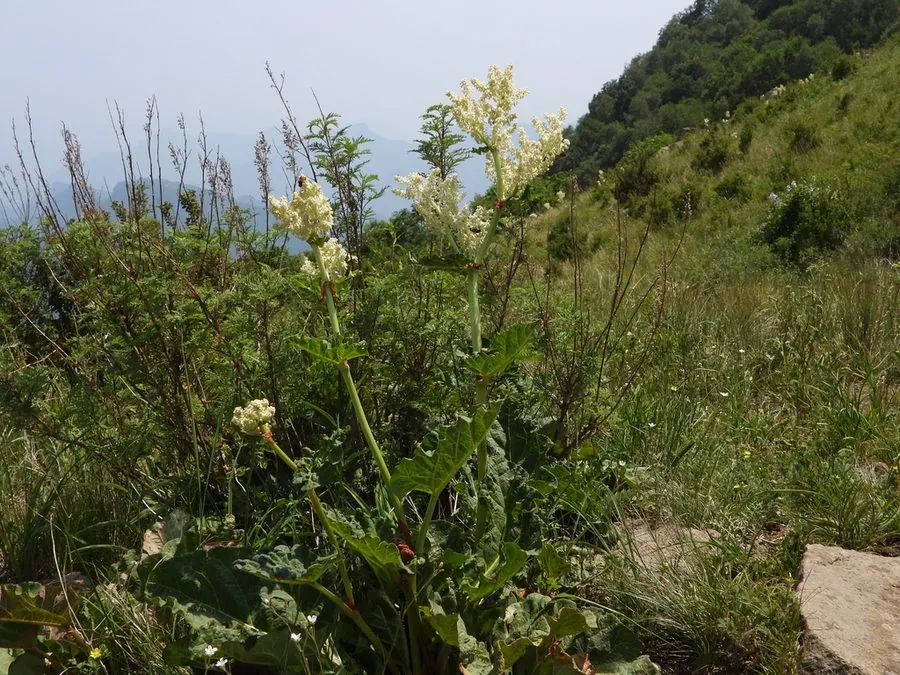

农作物与经济植物 · 植物界
食用大黄 Rheum rhabarbarum

蓼科多年生草本，叶柄肥厚多汁、酸味鲜明，是欧美春季经典的馅饼原料之一，叶片含草酸不可食用。
- 分类
- 门被子植物门纲木兰纲目石竹目科蓼科属大黄属
- 栖息环境
- 冷凉地区的菜园与田边，喜光、耐寒、需深厚肥沃土壤
- 地理分布
- 原产西伯利亚与东亚，欧洲、北美广泛栽培，中国北方有引种
- 保护级别
- 暂无评估；栽培作物
物种志
食用大黄为蓼科大黄属多年生草本，具粗壮的根状茎，株高 0.8–1.5 米。叶片大型，宽卵形至心形，直径可达 60 厘米，叶柄肥厚、呈红色或绿色，长 30–60 厘米，是主要食用部分。花葶高耸，圆锥花序大型，花小，黄绿色，花期 5–6 月；瘦果具三棱。
食用大黄原产西伯利亚与东亚，18 世纪起在欧洲广泛栽培，是温带地区春季最早上市的“水果”之一（植物学上是蔬菜）。叶柄酸味来自苹果酸与草酸，需加糖烹煮，常做馅饼、果酱与糖煮大黄。叶片草酸含量高，不可食用。栽培喜冷凉、阳光充足与深厚肥沃的土壤，以根状茎分株或播种繁殖，需培土软化叶柄以获柔嫩品质，冬季寒冷地区地上部枯萎越冬。
形态与习性
- 原产地西伯利亚与东亚
- 株高0.8–1.5 米，叶片直径可达 60 厘米
- 食用部位肥厚叶柄，红或绿色，酸味鲜明
- 用途馅饼、果酱、糖煮，春季时令食材
- 栽培喜冷凉向阳，分株或播种，需培土软化
- 注意叶片草酸含量高，不可食用
趣味知识
- 食用大黄吃的是叶柄，叶片因草酸含量过高而有毒，不能入口。
- 它是温带春季最早收获的“水果”之一，欧美有“大黄馅饼”的传统。
- 叶柄的红色来自花青素，加糖烹煮后酸味变柔和、色泽更艳。
- 19 世纪英国约克郡曾用它酿酒，也曾在战时被鼓励种植以替代水果。